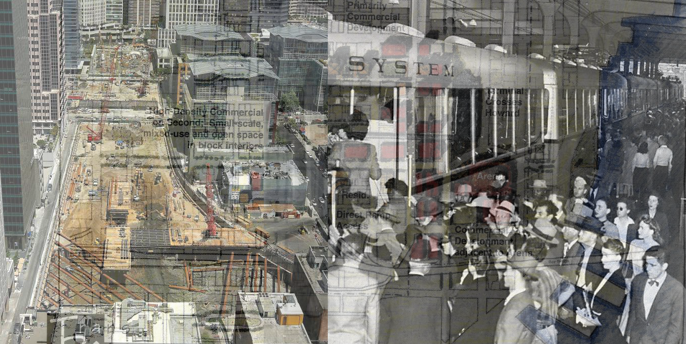

<div id="timeline-top-border">
<div class="timeline-interactive">

  <div class="clicky-image-wrapper">

    <div class="timeline-label">Timeline</div>
    <div class="clicky-image">
      </img>
    </div>
    <div class="clicky-text">

      <div class="interactive-title"><%=json.transbay_timeline.Hed%></div>
      <div class="interactive-deck"><%=json.transbay_timeline.Deck%>

        <div class="read-more" id="timeline-open">
          <div class="button"><i class="fa fa-hand-o-right" aria-hidden="true"></i>Click to read timeline.</div>
        </div>
      </div>

    </div>
  </div>


  <div id="stick-timeline"></div>
  <div id="timeline-wrapper">
    <div id="ticker">
      <div class="years left"><%=json.transbay_timeline.timeline[0].Year%></div>
      <% var difference = json.transbay_timeline.timeline[16].Year - json.transbay_timeline.timeline[0].Year; %>
      <div id="markers">
      <% json.transbay_timeline.timeline.forEach(function(d,didx){ %>
        <% if (d.Year.split(" ").length > 1) { %>
          <% var percent = (d.Year.split(" ")[1]-json.transbay_timeline.timeline[0].Year)/difference*100; %>
        <% } else { %>
          <% var percent = (d.Year-json.transbay_timeline.timeline[0].Year)/difference*100; %>
        <% } %>
        <div class="marker" id="t-<%=didx%>" style="left:<%=percent%>%"></div>
      <% }); %>
      </div>
      <div class="years right"><%=json.transbay_timeline.timeline[16].Year%></div>
    </div>
    <div id="close-timeline-button">Close timeline  X</div>
    <div id="timeline">
      <% json.transbay_timeline.timeline.forEach(function(d,didx){ %>
        <div class="event" id="e<%=didx%>">
          <div class="eventtext">
            <div class='dateyear'><%=d.Year%></div>
            <div class='datetext'><%=d.Text%></div>
          </div>
          <% if (d.Image){ %>
          <div class="eventimage">
            /3/1500x1000.jpg?v=14"></img>
            <div class="caption"><%=d.Credit%></div>
          </div>
          <% } %>
          <% if (d.Text2){ %>
            <div class='datetext text2'><%=d.Text2%></div>
            <% if (d.Image2){ %>
              <div class="eventimage">
                /3/1500x1000.jpg?v=14"></img>
                <div class="caption"><%=d.Credit2%></div>
              </div>
            <% } %>
          <% } %>
        </div>
      <% }); %>
    </div>

    <div class="credit">
      <div class="entry">Librarian: <a href="mailto:bvanniekerken@sfchronicle.com">Bill Van Niekerken</a></div>
      <div class="entry">Interactive producer: <a href="mailto:eoneill@sfchronicle.com">Emma O'Neill</a></div>
      <div class="entry">Producer: <a href="mailto:kchua@sfchronicle.com">Kimberly Chua</a></div>
    </div>
    <div class="divider"></div>
  </div>

</div>
